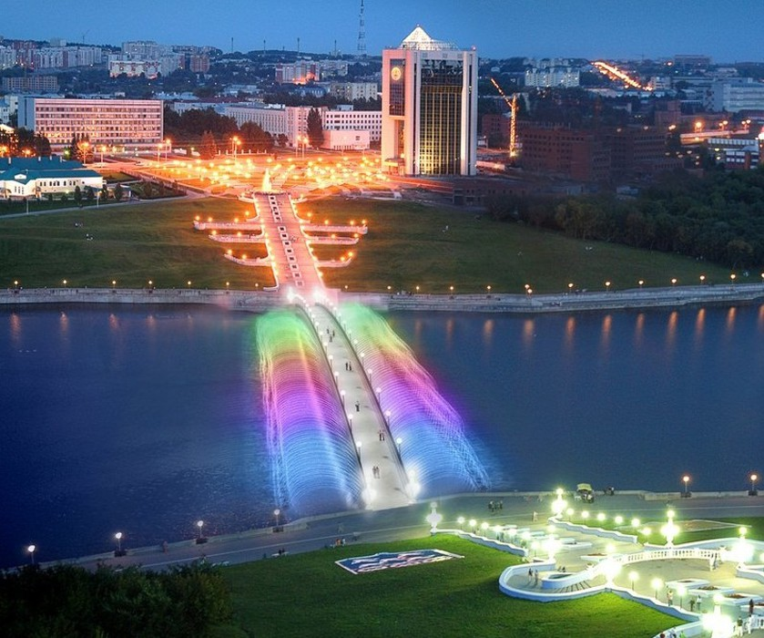

Junior верстальщик
Родился 5 мая 2006 года
Это я:
Я живу и учусь в Чебоксарах. Родился тут же. Мне тут несовсем все нравится, но в общем я доволен. Учусь в Гимназии №1
Это мой город:
Это моя школа(Гимназия №1):
У меня красивый город с большой историей
Но больше всего я люблю в нём:
Люблю там просто гулять и проводить время с семьей.